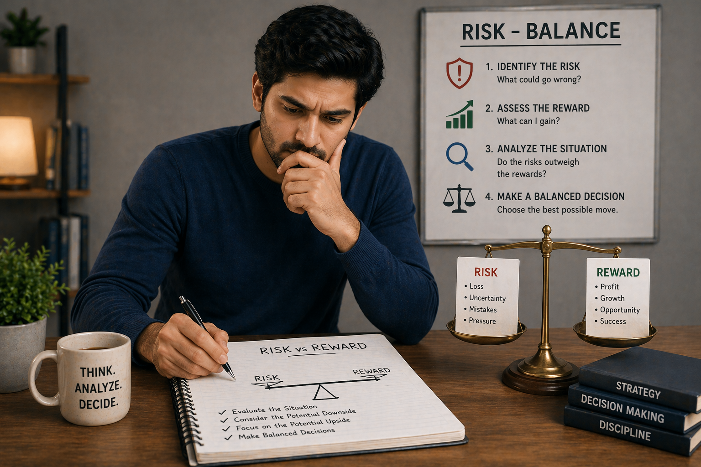

🪶 Introduction
Every decision in Teen Patti involves risk.
- Betting more → higher potential reward
- Playing safe → lower risk, but smaller gains
👉 The key to long-term success is not luck — it is risk management.
🎯 This guide will teach you how to:
- Evaluate risk correctly
- Make balanced decisions
- Avoid costly mistakes
🖼️ Risk Balance Overview

🎯 What Is Risk vs Reward?
Risk vs Reward means evaluating:
- What you might gain
- What you might lose
- Whether the decision is worth it
👉 Every action should have a reason, not just emotion.
🧠 1. Understanding Risk in Teen Patti
Risk is the possibility of losing value (chips, position, advantage).
Types of risk:
- Entering with weak situations
- Continuing when uncertain
- Escalating without justification
👉 Not all risks are bad — only unnecessary risks are dangerous.
🧠 2. Understanding Reward
Reward is what you gain when your decision succeeds.
Examples:
- Winning a round
- Gaining control over the table
- Forcing opponents to fold
👉 A good decision maximizes reward without exposing you to excessive risk.
🧠 3. Low Risk vs High Risk Decisions
🔹 Low Risk Decisions
- Conservative play
- Small commitments
- Safer approach
Advantages:
- ✔ Stable performance
- ✔ Lower losses
Disadvantages:
- ❌ Slower gains
🔸 High Risk Decisions
- Aggressive actions
- Larger commitments
- Pressure-based play
Advantages:
- ✔ Higher potential reward
Disadvantages:
- ❌ Bigger losses if wrong
👉 The goal is not to avoid risk, but to choose the right level of risk.
🧠 4. When to Take Risks
You should take calculated risks when:
- ✔ You have a strong read on opponents
- ✔ The potential reward is high
- ✔ The situation favors you
👉 This is a controlled risk, not a gamble.
🧠 5. When to Avoid Risk
Avoid risk when:
- ❌ You lack information
- ❌ The situation is unclear
- ❌ Opponents are unpredictable
👉 In these cases, protect your position.
🧠 6. Risk Based on Game Stage
- 🟢 Early Stage: Risk should be low. Focus on observation.
- 🟡 Mid Stage: Moderate risk. Adjust strategy.
- 🔴 Late Stage: Higher risk allowed. More pressure situations.
👉 Risk should increase as information becomes clearer.
🧠 7. Risk Based on Opponents
Against aggressive players:
- ✔ Reduce unnecessary risk
- ✔ Let them overcommit
Against passive players:
- ✔ Take more controlled risks
- ✔ Apply pressure
👉 Risk strategy depends on who you are facing.
🧠 8. Emotional Risk (Most Dangerous)
One of the biggest mistakes is emotional decision-making.
Signs:
- Chasing losses
- Acting out of frustration
- Taking revenge-style decisions
👉 Emotional risk is uncontrolled risk
How to control it:
- ✔ Stay calm
- ✔ Take breaks
- ✔ Stick to logical thinking
🧠 9. Risk and Table Control
Good players use risk to control the game.
Example:
- Small risks to test opponents
- Medium risks to apply pressure
- High risks only when justified
👉 Risk becomes a tool, not a weakness.
🧠 10. Risk Evaluation Framework (Simple)
Before making a decision, ask:
- What is the potential gain?
- What is the potential loss?
- How confident am I?
- What is the situation?
👉 If risk outweighs reward → avoid
👉 If reward justifies risk → proceed
🧠 11. Long-Term Risk Thinking
Short-term wins can be misleading.
Smart players think:
- Over many rounds
- Not just one decision
👉 Consistent low-risk + smart high-risk = long-term success
🧠 12. Avoiding Common Risk Mistakes
- ❌ Taking risks without reason
- ❌ Avoiding all risks (too passive)
- ❌ Overreacting to losses
- ❌ Ignoring context
👉 Balance is the key.
❓ FAQ
What is risk management in Teen Patti?
It is the practice of evaluating potential gains vs losses before making a decision to protect your chips and maximize long-term wins.
When should I take risks?
Take calculated risks when you have good information, the reward is high, and the situation favors you.
How do I avoid emotional risk?
Stay calm, avoid chasing losses, take breaks when frustrated, and stick to logical decision-making.
🧾 Summary
Risk management is one of the most important skills in Teen Patti.
It allows you to:
- Protect your position
- Make smarter decisions
- Reduce unnecessary losses
- Improve consistency
🎯 Final takeaway:
👉 Smart players don't avoid risk — they control it